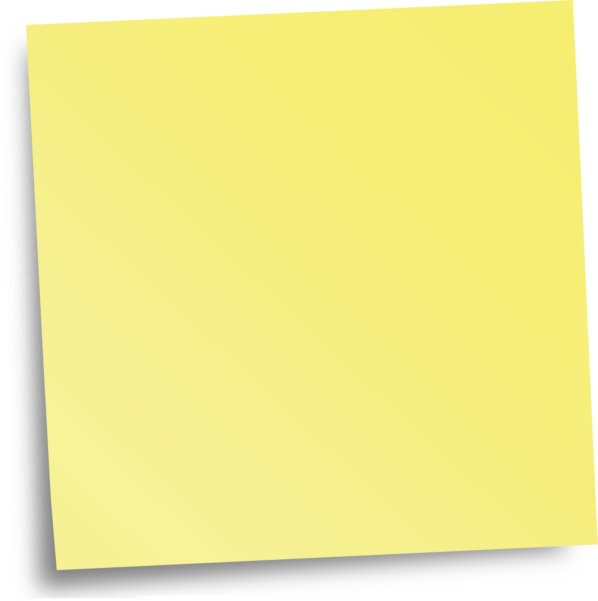
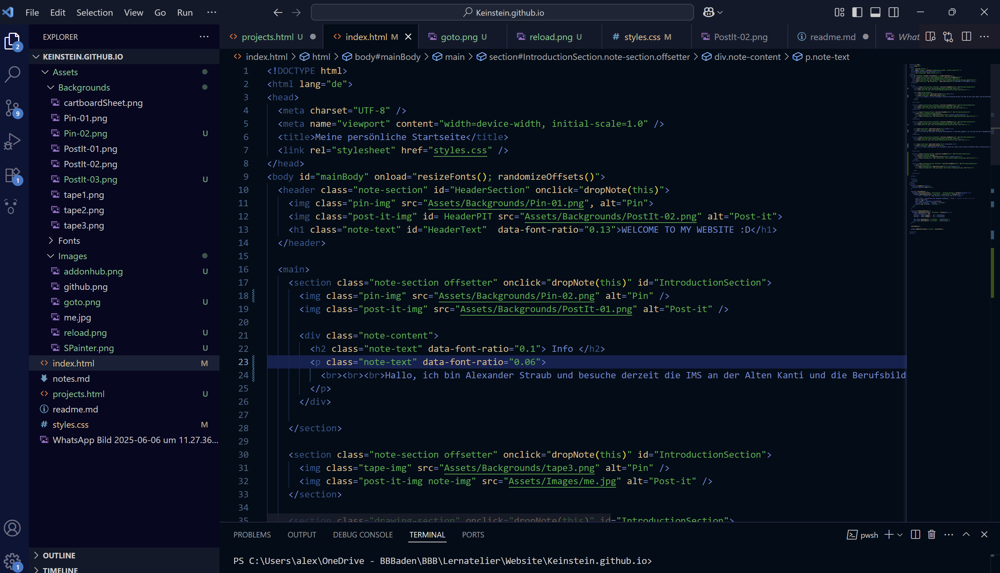

Info
Hallo, ich bin Alexander Straub und besuche derzeit die IMS an der Alten Kanti und die Berufsbildung Baden. Das Spannende an der Informatik ist für mich die Umsetzung von Ideen in fertige Produkte. Derzeit bin ich im 2. Jahr.
github.com/Keinstein0

Schule
Vor der IMS habe ich meinen Bez-Abschluss in Kölliken gemacht, wo ich auch mit der Programmierung in Python begonnen habe. Zu diesem Zeitpunkt verfügte ich über Sprachkenntnisse in: Deutsch, Französisch und Englisch. Dank der IMS konnte ich zudem weitere Kenntnisse in Wirtschaft sowie der Buchhaltung erhalten.
Informatik
Mein Lieblingsfach ist Informatik. Dank der Schule und privaten Projekten habe ich Kenntnisse in folgenden Bereichen:
- (micro)Python
- C# (+Frameworks wie ASP.NET und Monogame)
- Lua
- Sql
- HTML+CSS
- JS (Frontend+Backend mit NodeJS)
- Docker

respawn notes
My Projects